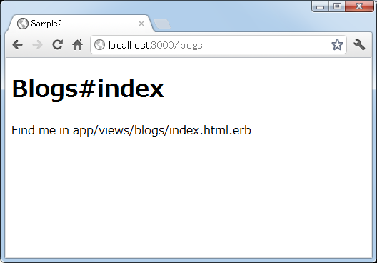

リソースベースのルーティング設定
RESTという考え方に従って作られたアプリケーションなどをRESTfulなアプリケーションと読んだりします。Railsの現在のバージョンではRESTfulなアプリケーションを作成するための機能が用意されており、特に理由が無ければその機能を使ったほうが簡潔にアプリケーションの作成が行えます。ここではRESTfulなRailsアプリケーションを作成する場合の、リソースベースのルーティング設定方法について解説します。
1.RESTfulな設計
2.resourcesメソッドを使ったルーティング設定
3.動作確認
RESTfulな設計
まずRESTについて簡単に解説しておきます。RESTとはアプリケーションの設計方法の1つで、操作の対象となるリソースをURLを使って表し、それに対してHTTPメソッドの「GET」「POST」「DELETE」「PUT」を使って操作を行なうというものです。あるURLへGETを使ってアクセスすれば、結果を取得でき、同じURLへPUTでアクセスすれば新しく作成されるよう設定を行ないます。
Railsのアプリケーションの場合、対象となるリソースはデータベースのテーブルがほとんどです。このリソースを表すURLが例えば「http://localhost:3000/sample」だったとします。RESTの考え方に従えば、この1つのURLに対してHTTPメソッドのGETでアクセスすればデータを取得し、PUTでアクセスすればデータの作成が行われるようにします。
Railsでは利用者からのリクエストで呼び出されるのはアクションですので、URLとHTTPメソッドの組み合わせ毎に呼び出されるアクションをルーティングとして設定すればいいことになります。そこで例えば次のようなルーティングを設定することになります。
GET 'sample' => 'books#index' POST 'sample' => 'books#create' DELETE 'sample' => 'books#destroy' PUT 'sample' => 'books#update'
ただ実際には「GET」でアクセスした場合に、テーブルのデータ一覧を取得したい場合もありますし、指定したデータだけを取得したい場合もあります。また新規にデータを登録する場合と、既存のデータを更新する場合には、登録画面を表示するように呼び出せると便利です。そこで次の7つのルーティングを設定します。
GET 'sample' => 'books#index' GET 'sample/:id' => 'books#show' GET 'sample/new' => 'books#new' POST 'sample' => 'books#create' GET 'sample/:id/edit' => 'books#edit' DELETE 'sample/:id' => 'books#destroy' PUT 'sample/:id' => 'books#update'
RESTfulなアプリケーションでは対象となるリソース毎にコントローラは異なるけれど同じ名前の7つのアクションを用意しルーティングを設定するようにします。URLを見れば何に対してどんな操作を行なうとしているのかが簡単に分かります。
resourcesメソッドを使ったルーティング設定
RESTfulな仕組みにしたがって手動でルーティングを設定してももちろんいいのですが、Railsではリソースをベースにしたルーティングを設定するための便利な仕組みが用意されています。「config/routes.rb」ファイルの先頭のほうにサンプルが記載されています。
Sample2::Application.routes.draw do # Sample resource route (maps HTTP verbs to controller actions automatically): # resources :products end
書式は次のとおりです。
resources :リソース名
resourcesメソッドに対象となるリソース名を指定した1行をルーティングとして記述するだけで、先程の記載した7つのルーティングが自動的に設定されます。
リソース名に指定した名前はリクエストのURL及び呼び出されるアクションのコントロール名として使われます。
ではresourcesメソッドを設定するとどのようなルーティングが設定されるのかを確認してみます。「config/routes.rb」ファイルに次のように記述しました。
Sample2::Application.routes.draw do resources :blogs end
そして設定されたルーティングを確認するために「rake routes」を実行します。
7つのルーティングが設定されていることが確認できます。リソース名として指定した名前がコントローラ名やリクエストのURLとして使用されていることも分かります。
動作確認
それでは実際に試してみます。「sample2」アプリケーションには新たに「blogs」コントローラを作成し、さらに「index」「new」「edit」「show」アクションをを作成します。
ルーティングの設定として「config/routes.rb」ファイルをテキストエディタで開き、次のように記述しました。
Sample2::Application.routes.draw do resources :blogs end
それでは準備ができましたのでRailsアプリケーションを起動して下さい。そしてまずブラウザから「http://localhost:3000/blogs」へアクセスして下さい。すると次のように「index」アクションが呼び出されます。

続いてパラメータ付きの「http://localhost:3000/blogs/3」へアクセスして下さい。すると次のように「show」アクションが呼び出されます。
続いてパスに「new」を追加した「http://localhost:3000/blogs/new」へアクセスして下さい。すると次のように「new」アクションが呼び出されます。
最後にパラメータとパスに「edit」を追加した「http://localhost:3000/blogs/3/edit」へアクセスして下さい。すると次のように「edit」アクションが呼び出されます。
リソースベースのルーティング設定を行った場合、自動的に7つのルーティングが設定されますが、別のアクションへのルーティングを追加したり逆に使わないアクションへのルーティングを削除することもできます。これらは次のページ以降で順に解説していきます。
( Written by Tatsuo Ikura )

著者 / TATSUO IKURA
初心者～中級者の方を対象としたプログラミング方法や開発環境の構築の解説を行うサイトの運営を行っています。